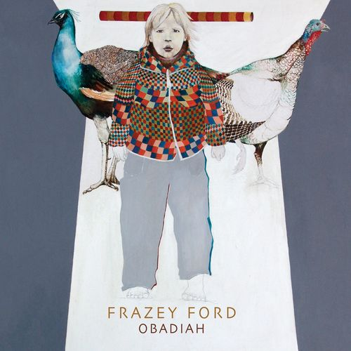
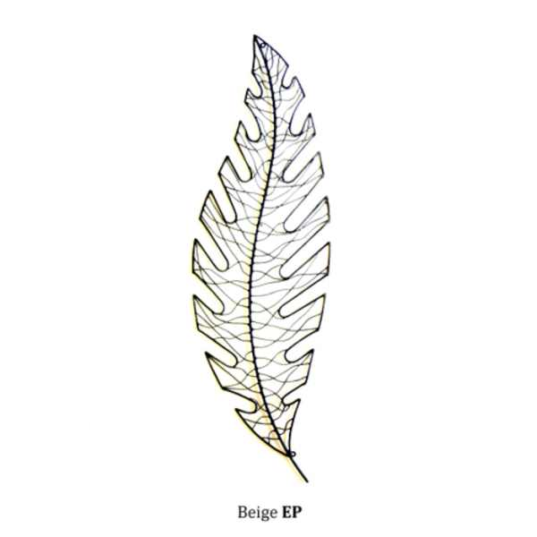
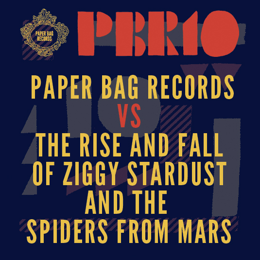
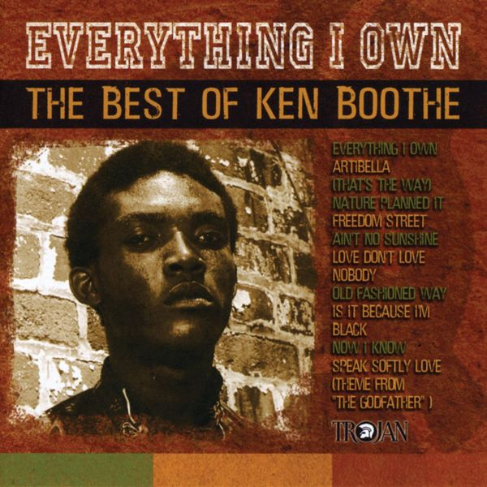
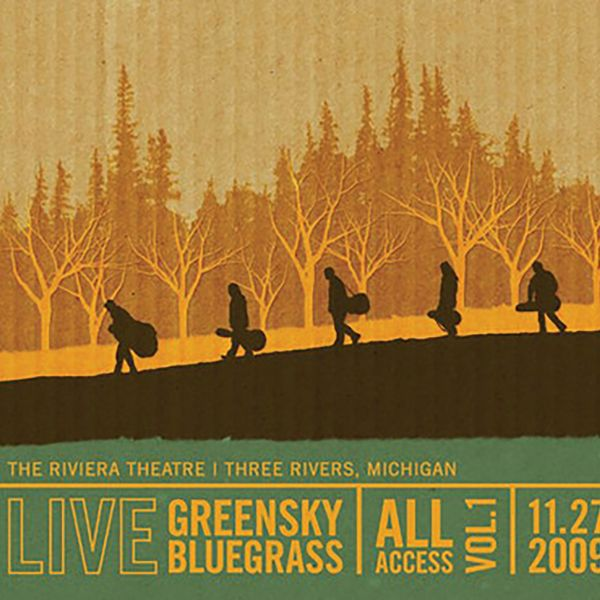
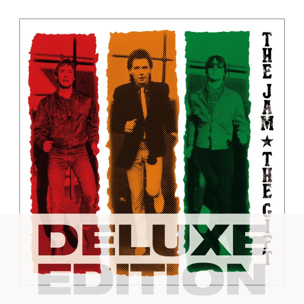
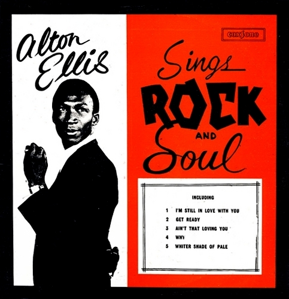
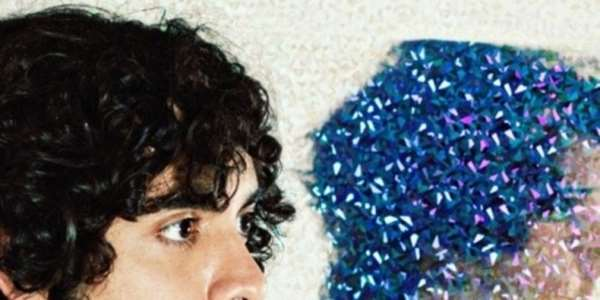
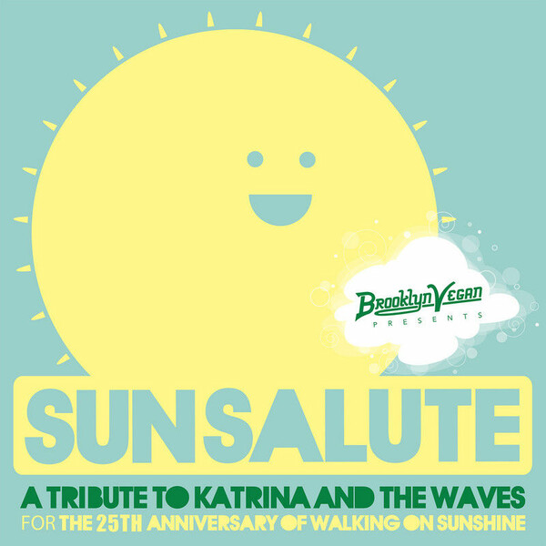

01
01
Over the Edge
Katy Goodman/Greta Morgan – Take It, It's Yours (2016)
orig. The Wipers
 02
02
The Boy With the Thorn In His Side
J Mascis – Martin + Me (1996)
orig. The Smiths
 03
03
Message To Pretty
David Kilgour & Martin Phillipps – We're All Normal And We Want Our Freedom - A Tribute To Arthur Lee And Love (1994)
orig. Love
 04
04
Marie douceur - Marie colère (Paint It Black)
Marie Laforêt – Marie (2020)
orig. The Rolling Stones
 05
05
Das Model
The Routes – The Twang Machine (2022)
orig. Kraftwerk

06Lovers In A Dangerous Time
Frazey Ford – Obadiah (2010)
orig. Bruce Cockburn
 07
07
Sex Beat
Alejandro Escovedo – Bourbonitis Blues (1999)
orig. The Gun Club
 08
08
Hey Jude
Wilson Pickett – Wilson Pickett: A Man and a Half (2008)
orig. The Beatles

09Walk In The Park
Beige – Internet Single (2010)
orig. Beach House
 10
10
It's All Over Now, Baby Blue
Marianne Faithfull – Negative Capability (2018)
orig. Bob Dylan

11Starman
The Rural Alberta Advantage – Paper Bag Records VS The Rise and Fall of Ziggy Stardust and the Spiders from Mars (2012)
orig. David Bowie

12Ain't No Sunshine When She's Gone
Ken Boothe – Everything I Own - The Definitive Collection (2007)
orig. Bill Withers
 13
13
Somebody To Love
Zola Jesus feat. Dead Luke – POST
orig. Jefferson Airplane
 14
14
Final Day
Rose Melberg – September (2013)
orig. Young Marble Giants
 15
15
Rhiannon
Best Coast – Just Tell Me That You Want Me ‒ A Tribute To Fleetwood Mac (2012)
orig. Fleetwood Mac
 16
16
Straight To Hell
Moby feat. Heather Nova – Burning London The Clash Tribute (1999)
orig. The Clash

17Time/Breathe Reprise
Greensky Bluegrass – All Access, Vol. 1 (2010)
orig. Pink Floyd

18Move On Up
The Jam – The Gift (Deluxe Edition) (2012)
orig. Curtis Mayfield
 19
19
Maggie May
Mathilde Santing – Forty Nine (2020)
orig. Bob Dylan

20Whiter Shade Of Pale
Alton Ellis – Sings Rock And Soul (1967)
orig. Procol Harum

21Children of the Revolution
Neon Indian – Internet Single (2010)
orig. T. Rex

22Walking on Sunshine
Sam Amidon – BrooklynVegan Presents Sun Salute: A Tribute to Katrina & The Waves and Walking on Sunshine (2013)
orig. Katrina & The Waves
 23
23
Only Love Can Break Your Heart
Saint Etienne – Foxbase Alpha (1992)
orig. Neil Young